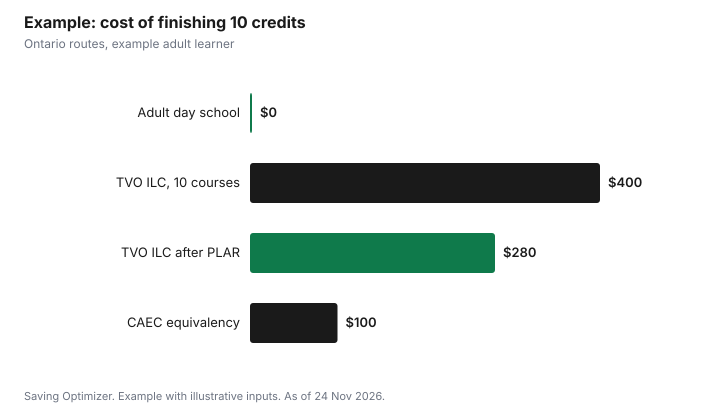

Education · Canada
Finishing High School as an Adult: Free Credit Programs

Adults in Ontario can usually finish high school for free or close to it. School boards run adult day schools and continuing education programs where Ontario residents take credit courses at no tuition cost, TVO's Independent Learning Centre charges most Ontario residents $40 per online course, and prior learning assessment can turn work and life experience into credits. If you need proof of high school level rather than the diploma itself, the Canadian Adult Education Credential costs $100 for all five tests.
Key takeaways
- School board adult day schools offer credit courses for Ontario residents, usually with no tuition. Check your board's adult and continuing education page.
- TVO ILC online credits cost $40 per course for most Ontario residents who register as independent students. Fees are non-refundable.
- Mature students can ask an adult school about PLAR, which can grant equivalency credits for prior learning so you take fewer courses.
- The CAEC replaced the GED in Ontario on 3 May 2024. It costs $100 for five tests and leads to an Ontario High School Equivalency Certificate.
- Example: an adult who needs 10 credits pays $0 at an adult day school, about $400 through TVO ILC, or $100 for the CAEC if equivalency is enough.
Adult day school and continuing education
Most Ontario school boards run an adult high school or adult learning centre. These schools offer the same Ontario credits as a regular high school, often in shorter, intensive terms, and with daytime, evening and online options. For Ontario residents, credit courses at board adult schools are generally free. A few boards charge small fees for materials or specific programs, so ask before you register.
Start by calling the adult and continuing education office for your public or Catholic board. Bring your old transcript, or ask your last high school for it. A guidance counsellor at the adult school will count your credits and tell you what you still need for the Ontario Secondary School Diploma (OSSD), which requires 30 credits plus the literacy requirement and community involvement hours.
Online credits
If you cannot attend in person, TVO ILC is Ontario's largest online high school. Its FAQ says most Ontario residents registering as independent students pay a partially subsidized fee of $40 per course. You must be at least 14, not currently enrolled in an Ontario high school, and you upload proof of Ontario residency. Students aged 18 to 19 also provide a date-of-leaving letter from their last school. All fees and payments are non-refundable, and an application is valid for one year.
Board adult schools often have their own online sections too, sometimes at no cost. Compare both: a board class gives you a teacher and fixed deadlines, while TVO ILC is more self-paced, with proctored final tests.
Costs
| Route | Typical cost | Best for |
|---|---|---|
| Board adult day school | Usually $0 tuition for Ontario residents | Adults who want a teacher and a timetable |
| TVO ILC online credits | $40 per course for most Ontario residents | Self-paced learners with irregular hours |
| PLAR for mature students | Usually no fee at a board adult school | Adults with work or life experience |
| CAEC equivalency | $100 for five tests; $100 for a second attempt | Adults who need proof of high school level, not the OSSD |
Other costs are small but real: transit to class, a used textbook or two, and time. If you are on Ontario Works, ask your caseworker whether transportation or test fees can be covered.
Prior learning: PLAR for mature students
Prior Learning Assessment and Recognition (PLAR) lets a school grant credit for what you already know. Ontario's policy for mature students lets adult schools assess your past schooling and experience and grant equivalency credits, which can cut the number of courses you take. You can also try to "challenge" a course by showing you already meet its expectations. Ask the adult school's guidance office how many credits you might receive before you sign up for anything.
Next steps: diploma or equivalency?
The OSSD is the stronger credential for university and most college programs. The CAEC, which replaced the GED in Ontario, gives an Ontario High School Equivalency Certificate. TVO ILC says it suits adults whose employer, college or apprenticeship needs proof of high school equivalency. You must be 18 or older, an Ontario resident for at least six months, and not currently registered in a high school. Our CAEC cost and free prep guide covers the test in detail, and mature student admission explains university routes that do not need a finished diploma.
Example: what 10 credits cost by route
An example adult needs 10 more credits to finish the OSSD.

At a board adult day school, tuition is $0. Through TVO ILC, 10 courses at $40 cost $400. If PLAR grants 3 of those credits, the TVO ILC cost drops to $280. If an employer only wants equivalency, the CAEC costs $100. The cheapest route is not always the best one. If you plan to go on to college or university, the diploma keeps more doors open.
Sources
- TVO ILC, Frequently Asked Questions ($40 per course for most Ontario residents; age 14+; non-refundable fees), checked 24 Nov 2026.
- TVO ILC, How to Apply (proof of Ontario residency; date-of-leaving letter for ages 18-19; application valid one year), checked 24 Nov 2026.
- TVO ILC, Earn the Canadian Adult Education Credential (CAEC replaced the GED on 3 May 2024; $100 for five tests; 18+; six months' Ontario residency), checked 24 Nov 2026.
- Ontario Ministry of Labour, Immigration, Training and Skills Development, memo on the replacement of the GED with the CAEC, 14 May 2024.
Frequently asked questions
Can adults finish high school for free in Ontario?
Usually, yes. School board adult day schools and continuing education programs offer credit courses to Ontario residents, generally with no tuition. Check your board's adult education page for any material fees.
How much do TVO ILC courses cost for adults?
TVO ILC says most Ontario residents registering as independent students pay a partially subsidized fee of $40 per course. Fees are non-refundable, and an application is valid for one year.
What is PLAR for mature students?
PLAR, or Prior Learning Assessment and Recognition, lets an adult school assess your past learning and experience and grant equivalency credits toward the Ontario diploma, so you may need fewer courses.
Is the CAEC the same as a high school diploma?
No. The CAEC leads to an Ontario High School Equivalency Certificate, not the OSSD. Many employers and colleges accept it, but check the admission rules for any program you want.
How many credits do I need for the Ontario diploma?
The OSSD requires 30 credits, plus the literacy requirement and community involvement hours. An adult school counsellor can count your existing credits and tell you what is left.
Researched and drafted with AI assistance and fact-checked against official Canadian sources. How we create content.
Note: Board programs and fees vary. Confirm with your school board and TVO ILC. Education only.